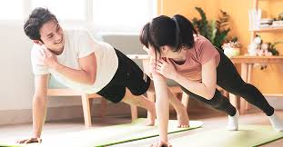

การออกกำลังกายเป็นกิจกรรมที่ช่วยให้ร่างกายแข็งแรง ช่วยเพิ่มสมรรถภาพของร่างกาย และช่วยลดความเสี่ยงของการเกิดโรคต่าง ๆ เช่น โรคหัวใจ เบาหวาน และความดันโลหิตสูง นอกจากนี้ยังช่วยให้จิตใจสดชื่น ลดความเครียด และทำให้นอนหลับได้ดีขึ้น
การออกกำลังกายสามารถทำได้หลายรูปแบบ เช่น การวิ่ง การเดินเร็ว การปั่นจักรยาน การว่ายน้ำ หรือการเล่นกีฬา โดยควรเลือกกิจกรรมที่เหมาะสมกับร่างกาย และทำอย่างสม่ำเสมอเพื่อให้เกิดประโยชน์ต่อสุขภาพ
1. การเดินหรือวิ่งเบา ๆ
เป็นการออกกำลังกายที่ง่ายและสามารถทำได้ทุกวัน ช่วยเผาผลาญพลังงานและทำให้หัวใจแข็งแรง
2. การยืดเหยียดกล้ามเนื้อ
ช่วยเพิ่มความยืดหยุ่นของร่างกาย ลดอาการบาดเจ็บจากการออกกำลังกาย
3. การออกกำลังกายแบบแอโรบิก
เช่น เต้นแอโรบิก ปั่นจักรยาน หรือว่ายน้ำ ช่วยให้ระบบไหลเวียนโลหิตทำงานได้ดี